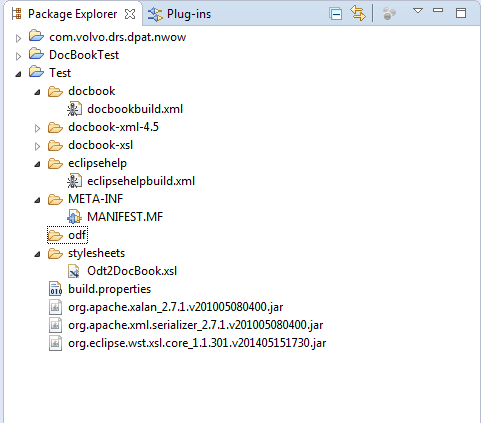

Create a general project
Configure – Convert to Plug-in project
Import from file system org.apache.xalan_2.7.1.v201005080400.jar, org.apache.xml.serializer_2.7.1.v201005080400.jar, and org.eclipse.wst.xsl.core_1.1.301.v201405151730.jar
Xalan 2.7.2
(or the relevant versions) to the root of the project.
Import docbook-xml-4.5 and docbook-xsl as folders.
Create the following subfolders: odf, docbook, eclipsehelp, and stylesheets.
Import Odt2DocBook.xsl to the stylesheets folder, docbookbuild.xml to docbook, and eclipsehelpbuild.xml to eclipsehelp
Import eclipse33.xsl to docbook-xsl/eclipse
Now your project should like something like this:
